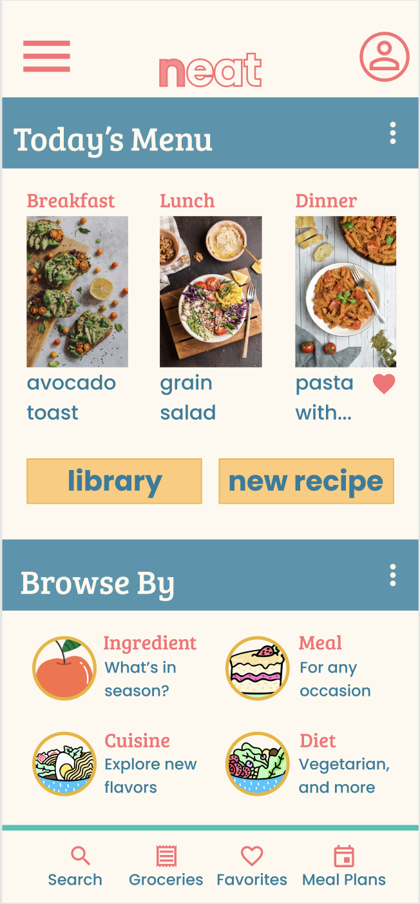
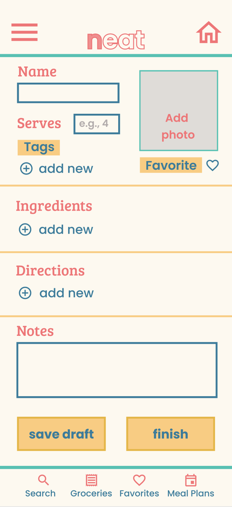

Kat Feng
Data Scientist and UX Designer
I am a full-time data scientist and a UX designer in training. Since fall 2021, I have been working on the Google UX Design Certificate.
Thanks for stopping by!
Portfolio Project 1: Mobile App Design - Recipe App
Background and Process
I wanted to design an app to help cafes manage their recipes and menus. As small cafe owners start to expand their businesses, they need to train more employees and deliver quality service across multiple locations. This app will help cafes achieve both of those goals while also engaging with customers with readily available recipes and menus.To design this app, I first conducted user research and a competitive audit. Next, I created wireframes and a low-fidelity prototype. I put together a research plan and performed a usability study with the low-fidelity prototype. The findings from that study focused the directions I took in creating my mockups. After crafting a high-fidelity prototype, I then performed a second usability study and finalized my designs.
Mockups
You can view my full case study as a pdf.Below, I have included two screenshots of my mockup designs: the homepage (left), and the "add new recipe" page (right).
 